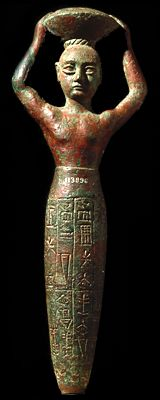

The Challenge -
Statue of Ur-Nammu

This statue of a king holding a basket of earth for building comes from Uruk. It is made of bronze or copper. The lower half is inscribed with cuneiform giving the names, titles and building works of King Ur-Nammu. It is a foundation deposit.
To learn more about cuneiform visit the Writing Story.
|
|